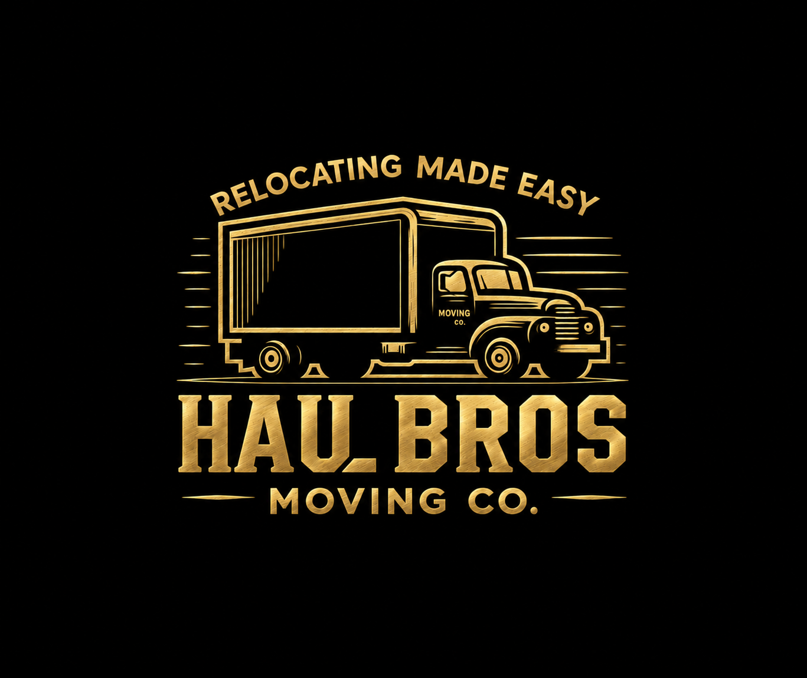

Best Movers in Northern Virginia: How to Compare Customer Reviews and Ratings

When searching for the best movers in Northern Virginia, a five-star score is a useful starting point—but it doesn’t tell the whole story. The number of reviews, how recent and detailed they are, the company’s communication, and the written estimate all matter.
Haul Bros Moving Co LLC is a Woodbridge-based moving company serving customers across Northern Virginia and the DMV. This guide explains what to look for when comparing local movers and how to review Haul Bros’ customer feedback.
What makes a moving company worth considering?
A strong rating can help you build a shortlist. Before booking, look for several kinds of evidence:
- Recent, detailed reviews: Look for comments about communication, arrival, care with belongings, and how the crew handled the move.
- A meaningful review count: A rating based on many reviews gives more context than one based on only a handful. Still, review counts and scores can differ across platforms.
- Clear written pricing: Ask what the estimate includes, how additional time is priced, and which services or materials may cost extra.
- A plan for your specific move: Share the inventory, addresses, stairs, elevators, parking, and any building requirements so the estimate can reflect the work involved.
- Credentials that fit your route: Verify the applicable state or federal authority for your move through the relevant official agency.
FMCSA recommends checking registration information for interstate movers and carefully reviewing your moving documents. Virginia DMV provides information about household goods carriers and moving requirements within the state.
What customers say about Haul Bros Moving Co LLC
Haul Bros Moving Co LLC’s website features customer feedback describing local moving experiences. The company serves Woodbridge and communities across Northern Virginia, with residential, apartment, townhouse, commercial, packing, storage, and labor-only services listed on its site.
Review platforms show different snapshots of customer feedback. Ratings, counts, and accreditation information can change. Check each platform directly for current information rather than relying on a copied score.
Individual customer experiences are not a guarantee that every move will be identical. Read the reviews yourself and consider whether the described services resemble your move.
How to compare mover ratings fairly
When reviewing Haul Bros or any other Northern Virginia moving company, use the same checklist for each:
- Compare like with like. A local apartment move and a large interstate relocation require different services.
- Check the date and detail. Recent reviews with specific information can help you understand what the customer experienced.
- Read across platforms. One website may have fewer reviews or focus on a particular service.
- Look at the response to concerns. If a review describes a problem, see whether the company responded and explained how it handled the issue.
- Match reviews with the estimate. Confirm that the written scope, crew, rate, and included services are clear before booking.
No single online rating proves that a mover is the right choice for every customer. Use reviews alongside a written estimate, direct questions, and official credential checks.
Questions to ask before booking
Before choosing a mover in Northern Virginia, ask:
- What services are included in my written estimate?
- How are additional hours or changes to the inventory handled?
- Does the estimate include the truck and standard moving equipment?
- How should I prepare for stairs, elevators, parking, or building rules?
- What registrations or operating authority apply to my specific move?
- Who will be my point of contact before and on moving day?
Haul Bros Moving Co LLC describes its local moving service as including loading, transportation, unloading, protective materials, and standard furniture disassembly and reassembly, as confirmed in the written estimate. Contact the company with your move details to verify what applies to your job.
Considering Haul Bros for a Northern Virginia move?
Haul Bros Moving Co LLC is based in Woodbridge and lists service across Northern Virginia and the DMV. If you’re comparing movers for an apartment, house, townhome, office, or labor-only move, share your move date, addresses, inventory, and access details to request an estimate.
Visit the Haul Bros Moving Co LLC contact page or call 571-899-1919.
Relocating made easy.
Northern Virginia Moving FAQs
1. Who are the best movers in Northern Virginia?
The best mover depends on your route, inventory, schedule, and budget. Compare recent customer reviews, written estimates, services, and credentials that apply to your move. Haul Bros Moving Co LLC serves Woodbridge and communities across Northern Virginia; contact the company to confirm availability and request an estimate.
2. How much do movers cost in Northern Virginia?
The price depends on the size of the move, crew size, time required, access conditions, and requested services. Ask each company for a written estimate that explains its rates and what is included. Haul Bros Moving Co LLC publishes local hourly rates on its pricing page; request an estimate based on your actual inventory and addresses.
3. Are there reliable movers near me in Woodbridge, VA?
To compare Woodbridge movers, read recent reviews across more than one platform, confirm the company’s contact details and applicable credentials, and ask for a written estimate. Haul Bros Moving Co LLC is based in Woodbridge and serves the surrounding Northern Virginia area.
4. What should I look for in moving company reviews?
Look for recent, specific reviews that describe communication, arrival, care with belongings, and how the crew handled the move. Review counts and ratings vary by platform, so read the comments and check the original review page for current information.
5. How many moving quotes should I get?
Many customers compare estimates from multiple companies so they can understand the proposed services and pricing. Give each mover the same inventory and access details, then compare what each estimate includes—not only the headline price.
6. Do movers in Northern Virginia charge by the hour or by the job?
Many local moves are priced by the hour, while some jobs may receive a flat-rate estimate. Ask how the quote is calculated, whether there is a minimum, and how additional time or changes to the move will be handled. Haul Bros Moving Co LLC publishes hourly local moving rates and can provide an estimate based on your move details.
7. Should I book movers before I have my move date?
A confirmed date makes it easier to reserve a crew and request an accurate estimate. If your date is not final, contact the mover to discuss tentative timing and availability. Confirm the date and terms directly before relying on a reservation.
8. What information do movers need to give me an accurate quote?
Provide the move date, pickup and delivery addresses, room-by-room inventory, stairs or elevators, parking conditions, long carries, building rules, and any packing or specialty-item needs. Clear details help the mover estimate the time and resources required.
9. Do local movers provide furniture protection and assembly?
Services vary by company and estimate. Ask whether the price includes blankets, wrap, floor protection, disassembly, and reassembly. Haul Bros Moving Co LLC describes these services as part of its local moving service when confirmed in the written estimate.
10. How can I verify a moving company in Virginia?
For an interstate household move, use FMCSA resources to check the mover’s registration and applicable authority. For a move within Virginia, consult Virginia DMV’s household goods carrier information. Requirements can depend on the route and type of service, so verify what applies to your move.
11. Is Haul Bros Moving Co LLC one of the top-rated movers in Northern Virginia?
Haul Bros has customer reviews on multiple platforms, but ratings and review counts can differ and change over time. Check the platforms directly, read the recent reviews, and compare the company’s written estimate and services with other movers you’re considering.
12. How do I request a moving estimate from Haul Bros Moving Co LLC?
Share your preferred date, pickup and delivery addresses, inventory, and access details through the Haul Bros contact page or call 571-899-1919. The company can confirm availability and discuss an estimate for your move.